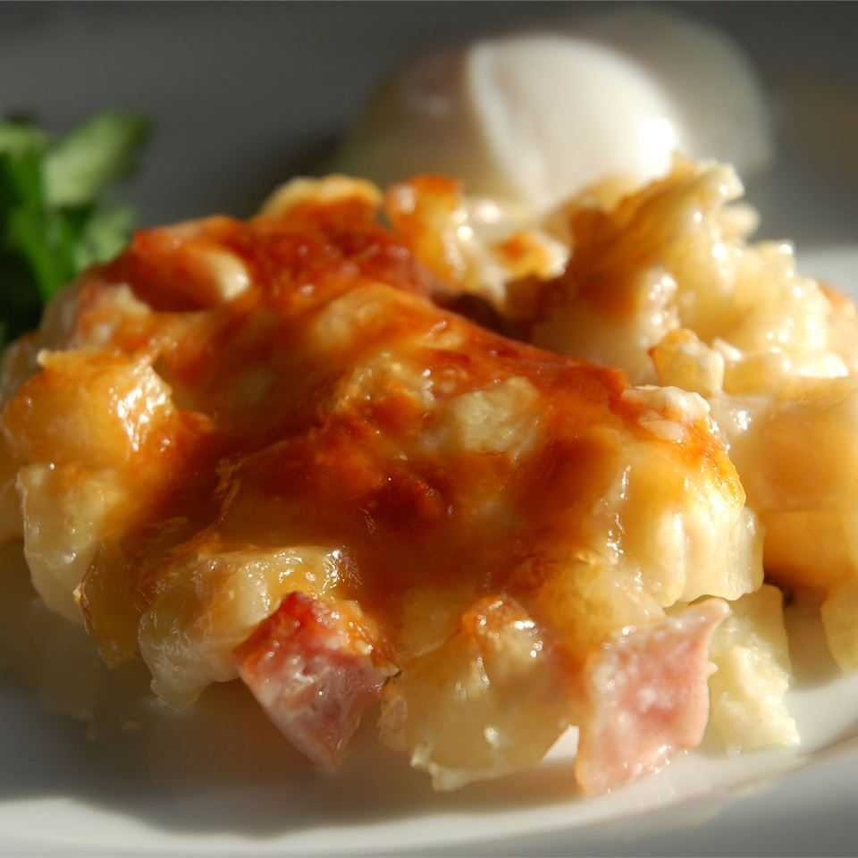

Ham and Hash Caserole

- Prep Time: 15 mins
- Cook Time: 1 hrs
- Total Time: 1 hr 15 mins
- Servings: 12
- Yield: 1 9x13-inch casserole
Ingredients
- Cooking Spray
- One 32oz package frozen hash brown potatoes
- Two 10.5oz cans condensed cream of potato soup
- One 16oz container sour cream
- 2 cups shredded sharp Cheddar Cheese
- 8oz cooked, diced ham
- 1 ½ cups grated Parmesan cheese
Directions
- Preheat the oven to 375 degrees F (190 degrees C). Lightly grease a
9x13-inch baking dish with cooking spray.
- Mix together hash browns, condensed soup, sour cream, Cheddar cheese,
and ham in a bowl until well combined. Spread evenly into the prepared dish.
Sprinkle with Parmesan cheese.
- Bake in the preheated oven until bubbly and lightly brown, about 1 hour.